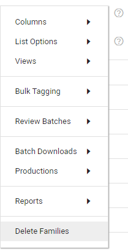
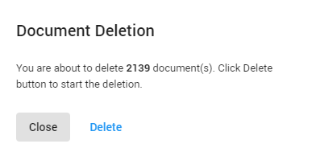

When (manually) deleting selected documents in the Document List (Delete Selection), the entire subtree (all the children of the selected document(s)) will be deleted, no matter what list option might be applied.
When deleting documents found by a query, deletion is dependent on the selected List Options.
In the Document List, select the Settings icon 

-
List option Flat List.
All documents (and its children) in the Document List are deleted. Click Delete to start the deletion action.

-
List option Partial/Full Family Tree.
All items belonging to a Family are deleted (the entire family tree), including items not present in the Document List. Click Delete to start the deletion action.

Note: In addition, the following items will be deleted:
-
Files in Shared Location (if there are no more references to them)
-
Their views
-
Record(s) in Legal Review
-
Files in Legal Processing (present in the database)
-
Also, document(s) will be marked as deleted in the index
-